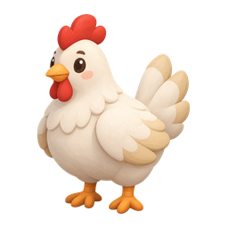
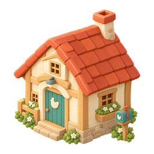
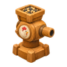

한글 디펜스 · 늑대가 오기 전에 읽어요 0.9

꼬꼬마을: 읽어서 지켜요

⏸️ 쉬는 중이에요
마을을 준비하고 있어요…
⚙️ 설정
⚡🦊
조금씩 자라는 우리 마을한 번에 맞힐 때마다 금화가 생겨요
늑대와 몬스터가 쉬지 않고 사방에서 몰려와 닭을 물어 가고 건물을 부숴요. 문제를 한 번에 맞히면 모든 타워가 일제 사격을 하고, 닭이 알을 낳아 농부가 팔아 금화가 생겨요(빨리, 연속으로 맞히면 더 많이). 금화로 언제든 가게에서 타워·닭·농부·울타리를 사요. 마을이 자라면 회관이 저절로 커져 마을이 넓어지고 새 물건과 새 몬스터가 나와요. 부서진 건물은 🔨 고치기로 고쳐요. 마을이 다 자라면 늑대 왕이 와요. 🔔 종을 울려 물리치면 새 마을로 떠날 수 있어요.